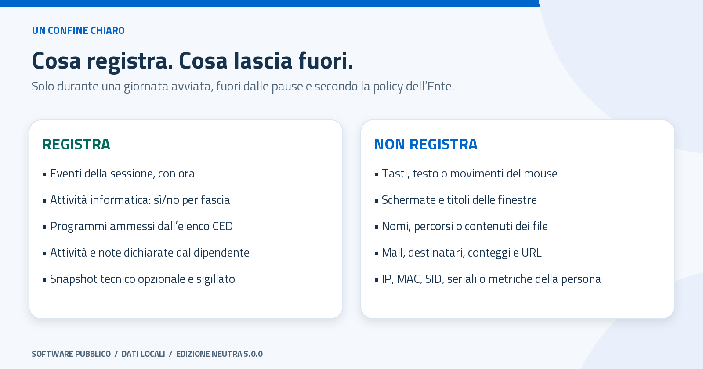
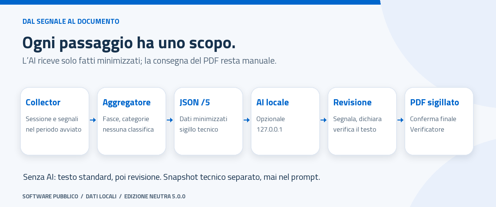
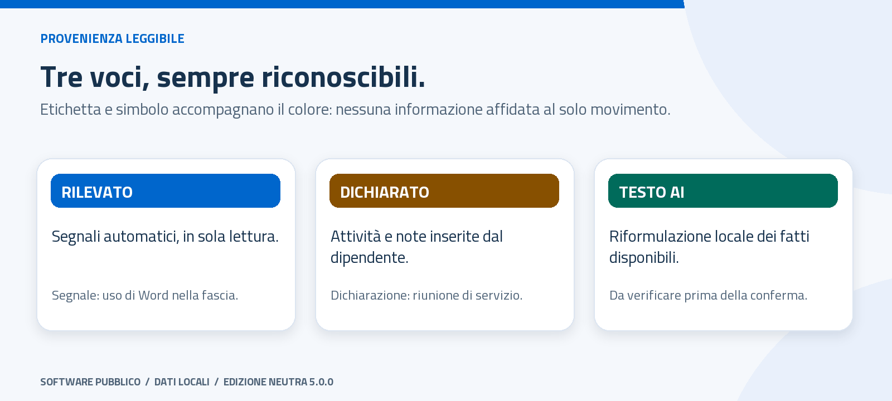
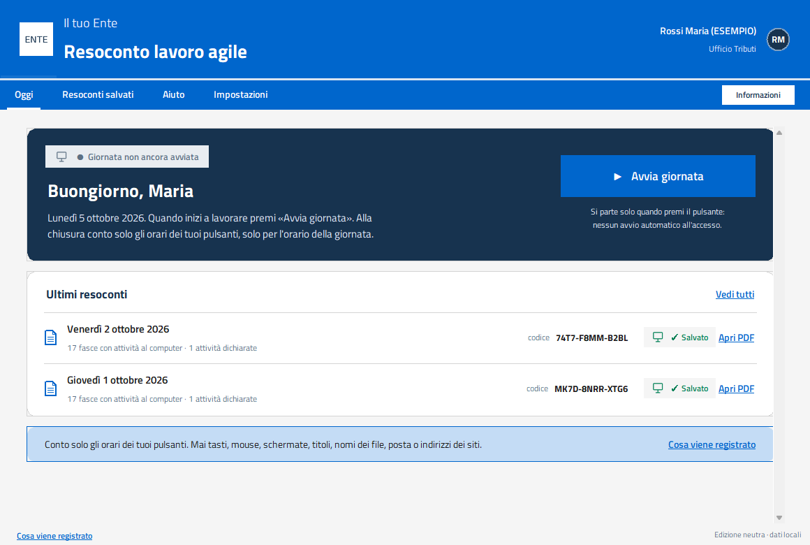
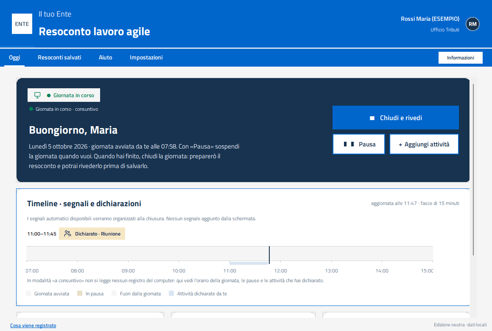
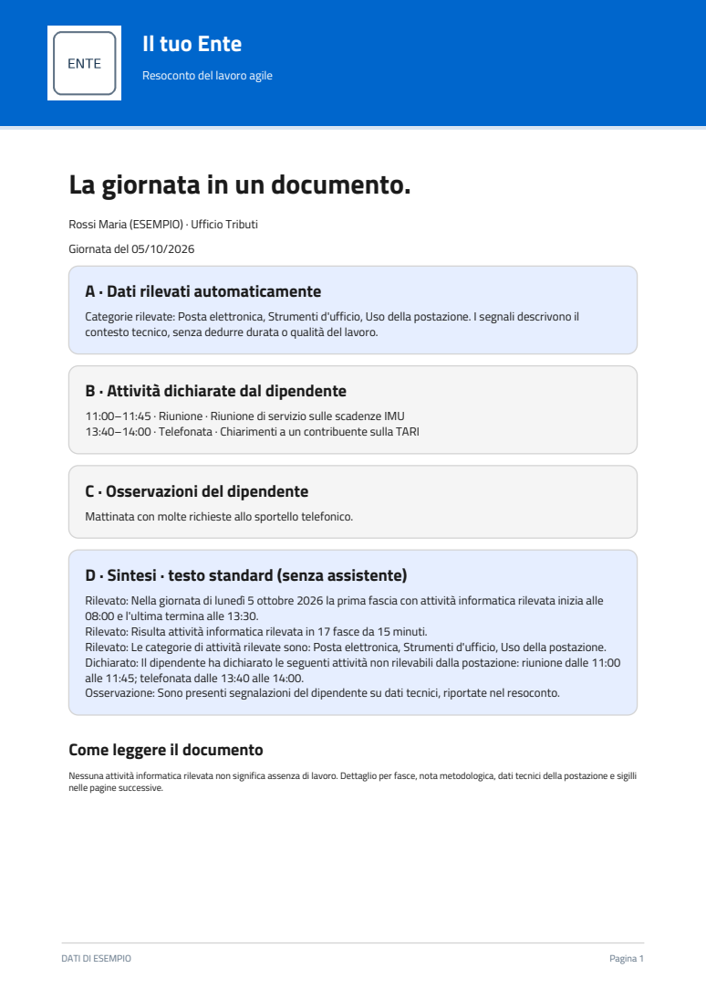
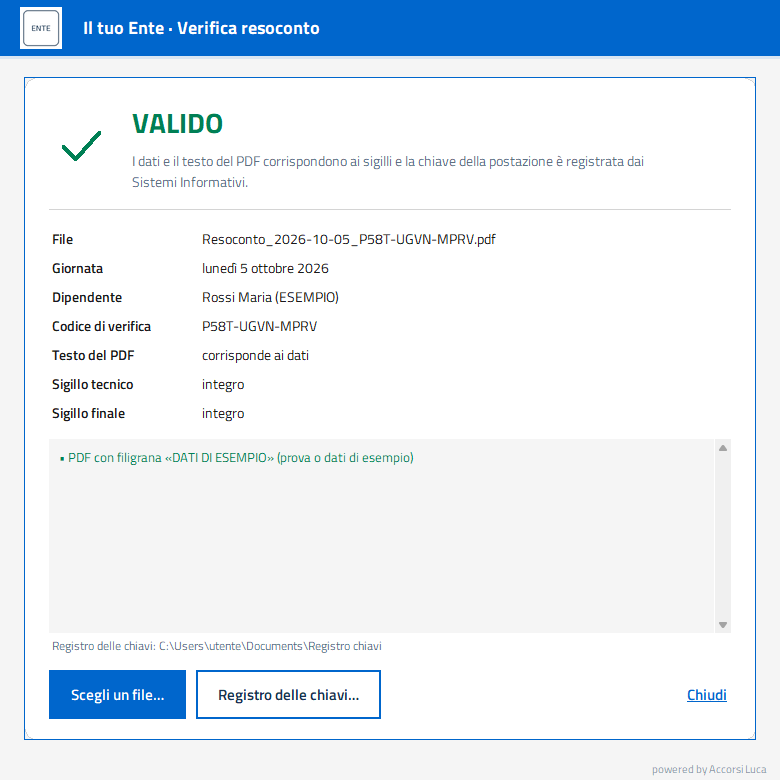
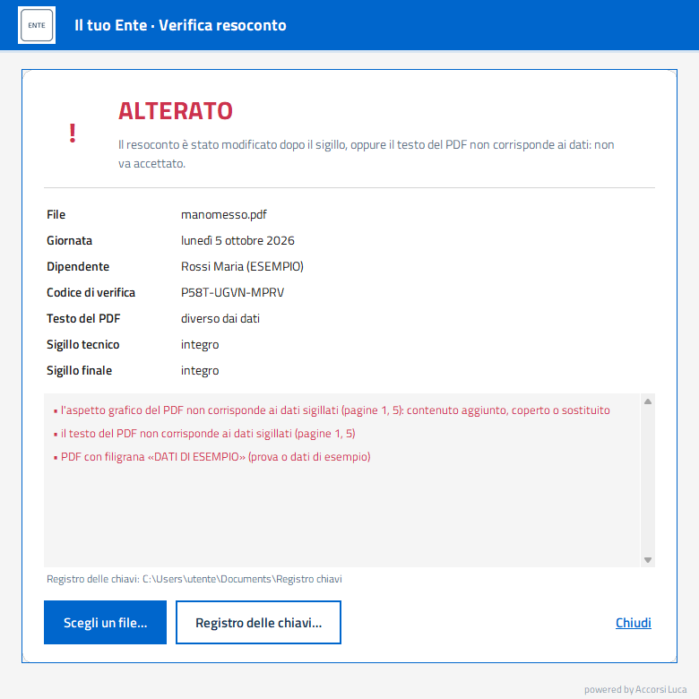
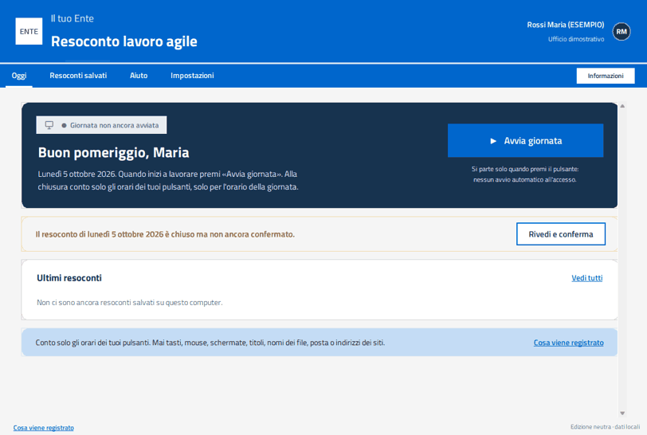
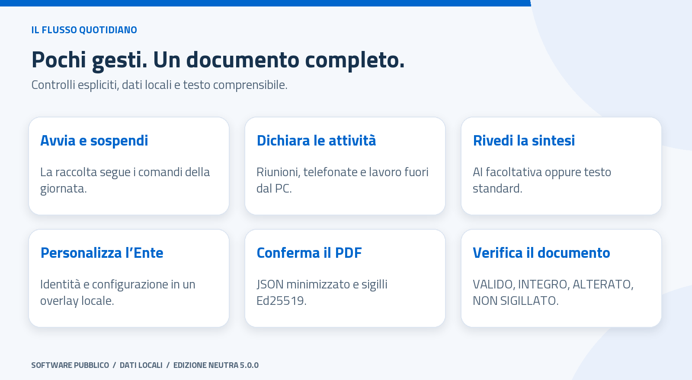

Osserva poco. Organizza, non giudica. Scrive, non inventa.
Il Collector osserva poco
Sessione Windows, attività informatica sì/no e solo i programmi dell’elenco del CED. Soltanto nel periodo della giornata avviata e fuori dalle pause.
L’Aggregatore organizza
Ordina i segnali in fasce e categorie. Non deduce qualità del lavoro né produttività della persona, non somma durate per programma.
L’AI scrive, non inventa
Facoltativa, in locale su 127.0.0.1, riformula fatti minimizzati con provenienza. Controllo anti-invenzione, testo standard di riserva, verifica umana.
Cosa registra, cosa non registra.
Il confine è netto e scritto nel codice, non in una promessa.
Registra
- Eventi della sessione Windows e relativi orari
- Presenza sì/no di attività informatica nella fascia
- Programmi in primo piano solo dell’elenco CED
- Browser come categoria, non come siti
- Attività e osservazioni scritte dal dipendente
Non registra
- Tasti, testo digitato, movimenti del mouse, schermate
- Titoli delle finestre, nomi o contenuti dei file
- Indirizzi, siti visitati, cronologia, contenuto della posta
- Classifiche, punteggi, produttività o durate dedotte
- IP, MAC, SID, seriali o account tecnico

Avvia, rivedi, conferma, consegna.
Il dipendente resta al centro: i dati automatici sono in sola lettura, ma può segnalare un dato, aggiungere attività e scrivere osservazioni.


Finestre reali, dati inventati.
Catture della versione 5.0.0 con dati sintetici («Rossi Maria (ESEMPIO)»). Nessun operatore osservato.






Un PDF che si può controllare.
Il resoconto incorpora il JSON sigillato (Ed25519). Il Verificatore, un’app a parte, dice se il documento è integro. Attesta l’integrità, non la qualità o il rendimento del lavoro.

Sigilli integri, chiave registrata, confronti di testo e grafica riusciti.
Integrità dimostrabile, ma chiave non registrata o confronto grafico non disponibile.
Dati o contenuto visibile non corrispondono; vengono mostrati i motivi.
Manca il sigillo finale o il JSON allegato al PDF.
Funziona anche senza.
Il pulsante di sintesi usa llama.cpp e un modello Qwen3 già predisposto dal CED, solo su 127.0.0.1: niente cloud, niente telemetria, nessun download a runtime. Profilo LIGHT per postazioni da 8 GB, STANDARD da 16 GB. Se manca qualcosa, l’app lo spiega in italiano e usa il testo standard.
Neutra o istituzionale.
La base pubblica usa «Il tuo Ente» e la palette neutra AgID. Nome, logo, colori e testi del tuo Ente si applicano con un overlay locale: il codice non incorpora identità di nessuno.
- Procedura dell’art. 4 L. 300/1970 (accordo sindacale o autorizzazione ITL dove richiesti)
- DPIA, informativa art. 13 GDPR e parere del DPO
- Periodi di conservazione approvati
- Prova pilota su postazioni reali e VDI
- Clausole nel regolamento del lavoro agile
Il progetto è progettato per minimizzazione e privacy by design, ma non è certificato né dichiarato conforme. Software «così com’è», licenza EUPL-1.2.
Le risposte in breve.
Che cos’è Smart Working Istituzionale?
È un software open source (licenza EUPL-1.2) per Windows 10 e 11 che aiuta gli enti pubblici a produrre il resoconto della giornata di lavoro agile: raccoglie pochi segnali, il dipendente rivede e conferma, e il PDF finale è sigillato e verificabile.
Il programma controlla o valuta il dipendente?
No. Non registra tasti, schermate, titoli di finestre, siti visitati o contenuti dei file, e non produce classifiche, punteggi o giudizi sulla persona. Nessuna attività informatica rilevata non significa assenza di lavoro.
Serve un’intelligenza artificiale in cloud?
No. La sintesi con AI è facoltativa e gira solo in locale su 127.0.0.1, senza cloud né telemetria. Senza AI l’app usa un testo standard.
Come si verifica che il PDF non sia stato alterato?
Il Verificatore, un’app indipendente, controlla il sigillo incorporato nel PDF e restituisce un esito: VALIDO, INTEGRO, ALTERATO o NON SIGILLATO. Attesta l’integrità del documento, non la qualità del lavoro.